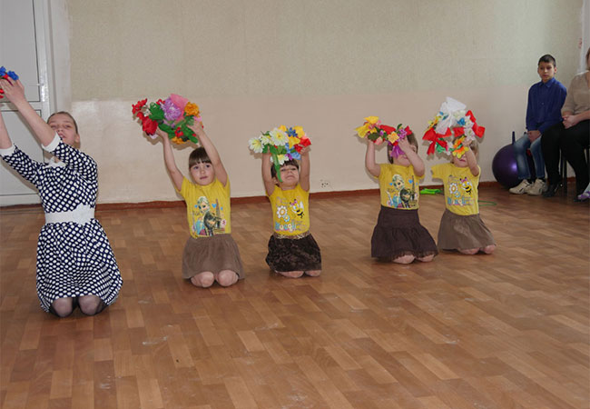

20.12.2017
Дети со сложной судьбой… Каждый из нас знает, что кроется за этими словами: дети-сироты или те, кто лишен родительской опеки, хотя и имеет родителей или хотя бы одного из них. Дети, оставшиеся вне семьи, без заботы, внимания и ласки, которые так необходимы каждому из них. Часто ли мы задумываемся, как складывается их повседневная жизнь? Каково им приходится? Как живется? Давайте начистоту – не часто. «А, ничего, государство позаботится. Авось, с голода не помрут», - так, к сожалению, думает подавляющее большинство из нас. И оно, государство, действительно, заботится, создавая специальные заведения – детские дома, приюты, интернаты и пр. И с голода, действительно, «не помирают». Но элементарно обуть-одеть и накормить – разве этого достаточно? Достаточно, чтобы воспитать не просто здоровую морально и физически, всесторонне развитую личность, но человека, приспособленного жить в социуме, умеющего любить, сострадать, уважать себя и окружающих, приходить на помощь другому, если это потребуется? Человека с активной и правильной гражданской позицией, способного создать свою крепкую семью и стать полноценным членом общества? Думается, что не достаточно. Для этого требуется нечто большее, чем просто формальный подход к делу. Хорошо, что в нашем городе существует заведение, сотрудники которого озабочены не только вопросами насущного бытия детей, оказавшихся в нем, но и всеми силами стараются помочь каждому ребенку прежде всего стать Человеком.
Дети с украденным детством
Речь идет о Краматорском Центре социально-психологической реабилитации детей. Напомним, что Центр был образован на базе городского приюта для детей более двух лет назад.
- В нашем заведении оказались дети, у которых, по большому счету, украли детство, - говорит директор Центра социально-психологической реабилитации детей Татьяна Вернигора. – Чаще всего в этом виноваты родители, иной раз и бабушки или дедушки, которым внуки также оказались не нужны. Но как бы там ни было, наша задача – создать в Центре Территорию счастливого детства, уютный дом для детей, где каждый ребенок перестал бы чувствовать себя отверженным, не нужным в этом мире.
Сделать это совсем не просто. Дело в том, что большинство детей, оказавшихся тут, повидали на своем пока еще коротком веку немало страданий и лишений. Это не только отсутствие так необходимой в их возрасте любви родителей, но зачастую и голод, и побои, и издевательства в семье, а также негативно-презрительное отношение к себе со стороны сверстников и других окружающих. Поэтому многие приходят сюда нездоровыми – не столько физически (хотя и это случается), сколько морально. Вот, к примеру, не так давно в заведении была проведена акция «Увидеть себя»: приглашенный профессиональный фотограф сделал большие и красивые снимки детей. Так некоторые из них …захотели разорвать свои фотопортреты. По мнению специалистов, это говорит о том, что ребята не привыкли видеть себя со стороны, плохо относятся сами к себе. А если ребенок плохо относится к себе, что остается говорить о его отношении к окружающему миру? Что и говорить, работать с такими детьми непросто, ох, как непросто…
Как рассказала Татьяна Вернигора, в Центре социально-психологической реабилитации в работе с детьми применяют специальную авторскую методику, разработанную заместителем руководителя и по совместительству психологом Игорем Половинко. Методика включает в себя несколько направлений, и на практике показывает вполне успешные результаты.
В труде и учебе…
Одно из важных направлений – социализация.
- Ребенок не должен постоянно оставаться только в стенах и во дворе нашего Центра, - говорит Татьяна Вернигора. – Мы стараемся, чтобы наши воспитанники как можно больше посещали различные городские мероприятия, организовываем для них походы в кино, кафе, парки культуры и отдыха, устраиваем прогулки по Краматорску, поездки в зоны отдыха. Ребенок не может нормально развиваться, находясь в замкнутом помещении, среди таких же как он детей. Он должен научиться понимать, что он – часть социума, правильно себя вести в нем, а для этого нужно, как говорится, «и других посмотреть и себя показать».
Нужно отметить, что воспитанники Центра социально-психологической реабилитации не обучаются по школьной программе в интернате, как это было некогда. Все они посещают обыкновенную общеобразовательную школу, то есть обучаются среди обычных «домашних» детей.
Много времени уделяется формированию у ребят правильного понимания семьи. Не секрет, что большинство из них до того, как попасть в Центр, воспитывались в семьях, далеких от тех, что принято называть «нормальными». Зачастую, они могли наблюдать лишь нигде не работающих и асоциально ведущих себя родителей. Такой ребенок воспринимает модель паразитирующего на обществе индивида, как естественную. Он считает, что работать вовсе необязательно, так как его мама живет, надеясь на пособие и на помощь социальных работников или волонтеров. Приходится прилагать усилия, чтобы объяснить такому человечку, что каждый должен трудиться, чтобы иметь возможность достойно жить и заботиться о членах своей семьи, а не ждать, пока это сделает кто-то другой.
Существенное направление в работе – речевое развитие детей. Дело в том, что многие оказавшиеся здесь ребята, имеют скромный словарный запас, не умеют правильно разговаривать, выражать свои мысли, формулировать и излагать собственную точку зрения, даже если они уже давно не относятся к категории «самых маленьких». Поэтому сотрудники Центра не только занимаются привлечением ребят к чтению: каждое прочитанное произведение пересказывается детьми, а затем и проигрывается в лицах.
Обязательным является морально-этическое и гражданско-патриотическое воспитание, прививание любви к своей Родине, ее истории, обычаям и традициям, и, конечно же, к государственному языку. В рамках этого направления работы в Центре регулярно проводятся всевозможные мероприятия, сценарии к которым пишут сотрудники заведения.
- Учитывая, что регион наш, в общем-то, русскоязычный, приходится сталкиваться с тем, что многие не знают украинского языка, - отмечает Татьяна Вернигора. – Но, если с детьми постоянно общаться на украинском, то они быстро схватывают, и учатся правильно отвечать.
По мнению директора Центра, нельзя изменить ребенка не работая с родителями. Тем более, что многие из мам, кто отказались от детей или лишенные родительских прав изредка навещают своих чад, морочат ребенку голову пустыми обещаниями забрать домой.
- Мы стараемся говорить с родителями при детях, - рассказывает Татьяна Анатольевна. – Просим рассказывать о своих планах, конкретизировать их. Конечно, мы только «за», чтобы мама одумалась, начала вести нормальный образ жизни, вернула права на ребенка и забрала бы его в семью. Но, к сожалению, такое бывает не часто. Между тем, ребенок иной раз не желает вливаться в жизнь коллектива, выполнять определенные обязанности и требования – ведь он ждет, что его заберут домой. Нельзя позволять давать детям ложные надежды.
Немало времени уделяется развитию физической активности детей. Ведь физическая активность стимулирует развитие умственной – это два неразрывно связанных между собой фактора.
Трудовое воспитание в Центре – также не на последнем месте. Воспитатели делают все возможное, чтобы ребенок научился ухаживать за собой, умел, к примеру, делать уборку, гладить и пр. По очереди дети принимают участие в дежурствах – по комнатам, на глажке, в столовой.
Аллея усыновителей
С удовольствием дети помогают ухаживать за деревьями в Ландшафтном парке Детей, что на территории Центра. Это – гордость заведения. Идея обосновать в Краматорске Парк детей, появилась еще в 2014 году, но реализовать ее удалось лишь в прошлом году. До этого территория заведения была мало ухоженной, заросшей, тут произрастали старые акации, высаженные еще после окончания Второй Мировой. Чтобы приступить к облагораживанию территории пришлось приложить много усилий: удалить старые деревья, выкорчевать пни. Помощь оказали коммунальники, но во многом работы были выполнены сотрудниками Центра. Для обустройства Ландшафтного Парка был разработан благотворительный проект озеленения, согласно которому вокруг детской площадки должны были появиться березы, туи, ели, кусты можжевельника и барбариса, а также кустарники самшита. Приобретаются зеленые насаждения на благотворительные средства. Интересно, что в рамках специальной благотворительной акции любой желающий может приобрести сертификат на именное дерево для воспитанника детского приюта. Усыновители, забирая детей в семью, также приобретают дерево для ребенка и оставляют его для будущего парка, таким образом здесь появится березовая Аллея усыновителей.
- Выросшие воспитанники приюта всегда смогут привести собственных детей, внуков к своему дереву и вспомнить, что в свое время они обрели любовь и заботу в нашем учреждении, - говорит Татьяна Вернигора. – Это не просто благоустройство территории. Новые зеленые насаждения призваны символизировать начало новой жизни, новой истории. И куда бы ребенок ни шел из стен нашего Центра, корни его, как и корни именного дерева останутся здесь.
В октябре прошлого года в посадке деревьев приняли участие представители городской власти во главе с мэром Андреем Панковым и депутаты. Значительную благотворительную помощь в обустройстве Парка для детей оказали сотрудники Ровенской областной прокуратуры, а также предприятия города, благотворительные фонды, общественные организации. Сейчас Парк радует глаз воспитанников, сотрудников и гостей заведения.
Чтобы в жизни появилась радуга…
О работе Краматорского Центра социально-психологической реабилитации детей можно рассказывать долго. На сегодняшний день в Центре проживают 37 ребят от 3 до 14 лет. Воспитатели заботятся о том, чтобы дети не чувствовали себя ущербными, обделенными родительской лаской. Они стараются придумывать разные игры и занятия, чтобы ребенку было интересно, чтоб его мысли как можно реже возвращались к родной, но неблагополучной семье. Ежедневно сотрудниками проводится много полезной, необходимой кропотливой и щемящей сердце работы с детьми, осиротевшими или оказавшимися не нужными своим родным и близким.
Однако как отмечают руководство и сотрудники заведения, самое главное – это суметь создать уютную домашнюю атмосферу, любить каждого ребенка, дарить тепло, заботу и радость. И, по всей видимости, делать это удается: детки тут выглядят вполне довольными, улыбчивыми и радостными, они живут одной большой и дружной семьей, дружелюбны, общительны и встречают посетителей улыбками.
- Верю, все, что мы делаем для детей, изменит их жизнь, - говорит замдиректора Центра социальной реабилитации Игорь Половинко. – И жизнь эта уже не будет прежней, и в ней появится радуга. Верю, что обязательно наступит момент, когда потребительская потребность «брать» естественно вырастет во взрослую «родительскую» давать или в социальную – быть нужным другим.